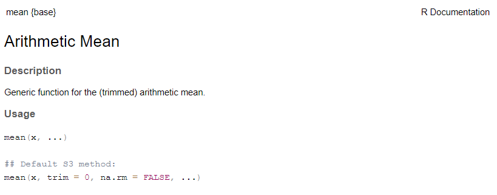
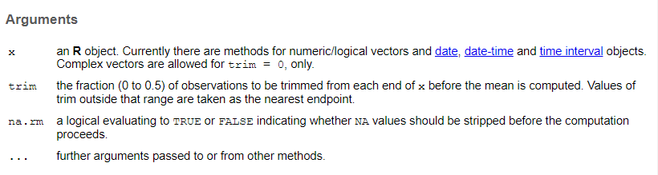
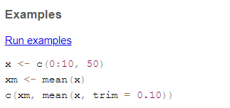

dates = c("Monday", "Tuesday", "Wednesday")
#select the first element of the `dates` vector (more on this tomorrow)
date[1]Error in date[1]: object of type 'closure' is not subsettableOne of the most frustrating parts of coding is errors. Your computer is very good at doing exactly what you tell it to, but that might not be what you want.
dates = c("Monday", "Tuesday", "Wednesday")
#select the first element of the `dates` vector (more on this tomorrow)
date[1]Error in date[1]: object of type 'closure' is not subsettableThis is one of my least favorite error messages. What the heck does that even mean?
It turns out we accidentally typed date instead of dates, and date is a reserved term in R, so it was trying to subset a word that designates a data type and everyone was confused. But don’t worry! It gets worse.
Everyone has trouble interpreting error messages at first. Fortunately, error messages are improving, and you will get better at understanding them.
Another thing to know is that not all red text is errors. Some are warnings. Don’t worry about what this code does for now, just see what the output looks like.
mtcars[1,1] = NA
ggplot(mtcars, aes(x = mpg, y = hp))+ geom_point()+ geom_smooth()`geom_smooth()` using method = 'loess' and formula = 'y ~ x'Warning: Removed 1 row containing non-finite outside the scale range
(`stat_smooth()`).Warning: Removed 1 row containing missing values or values outside the scale range
(`geom_point()`).
Everything still ran, but it gave to a warning to let you know something did not go as planned.
We also sometimes get messages, which are usually not even red.
#don't worry about what this code does for now, just notice that we get a message telling you what it decided to use for the smoothing term.
ggplot(mtcars, aes(x = mpg, y = hp))+ geom_point()+ geom_smooth()`geom_smooth()` using method = 'loess' and formula = 'y ~ x'The first thing to learn, is how to read the documentation for a function.
?meanThe documentation has a few standard parts
Function and package in curly brackets at top
Title
Description- Frequently not all that helpful, but sometimes useful
Usage (Function and arguments)

Arguments - description of what all the arguments should contain

Value - output

References - articles or more info
See Also - similar functions or functions you might want if you want this one

Examples - THE MOST USEFUL PART!

Sometimes there are other parts, including more details on statistical methods, but these are the basics.
Look up the documentation for these functions and see if you can run the examples.
rnorm
aov
sample
Click below to see the answer when you are done.
?rnorm
#rnorm generates a random number or numbers from a normal distribution. You can specify the mean and standard deviation
#this generates 20 random numbers with a mean of 10 and a standard deviation of 3
rnorm(20, mean = 10, sd =3)
?aov
#aov runs an ANOVA (analysis of variance), which tests for differences between groups
#the examples use the "npk" dataset which is built into R
aov(yield ~ block + N * P + K, npk)
?sample
#this function takes a subsample of a larger set of number of a specified size
x <- 1:12
# a random permutation
sample(x)
# bootstrap resampling -- only if length(x) > 1 !
sample(x, replace = TRUE)
How to save your workspace image.
save.image()
#also little save icon on environmentHow to clear your workspace.